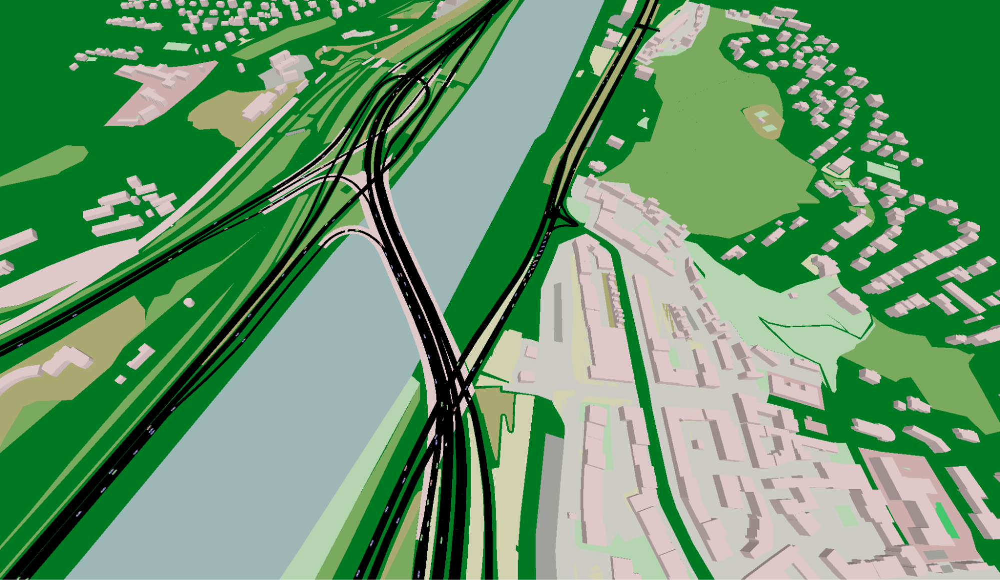
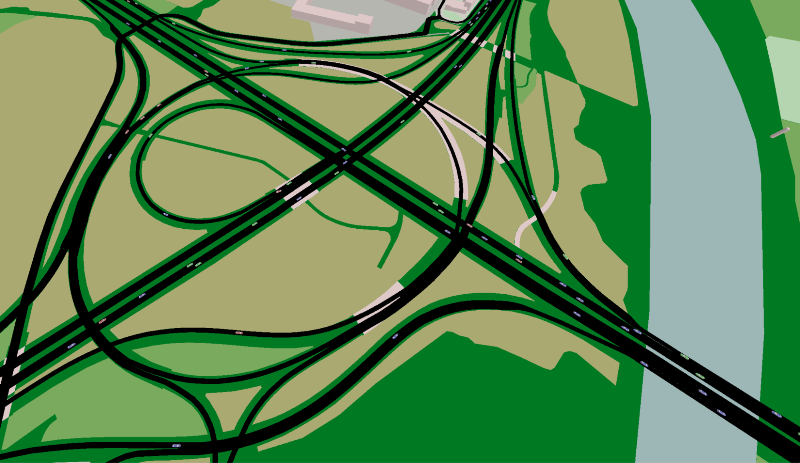
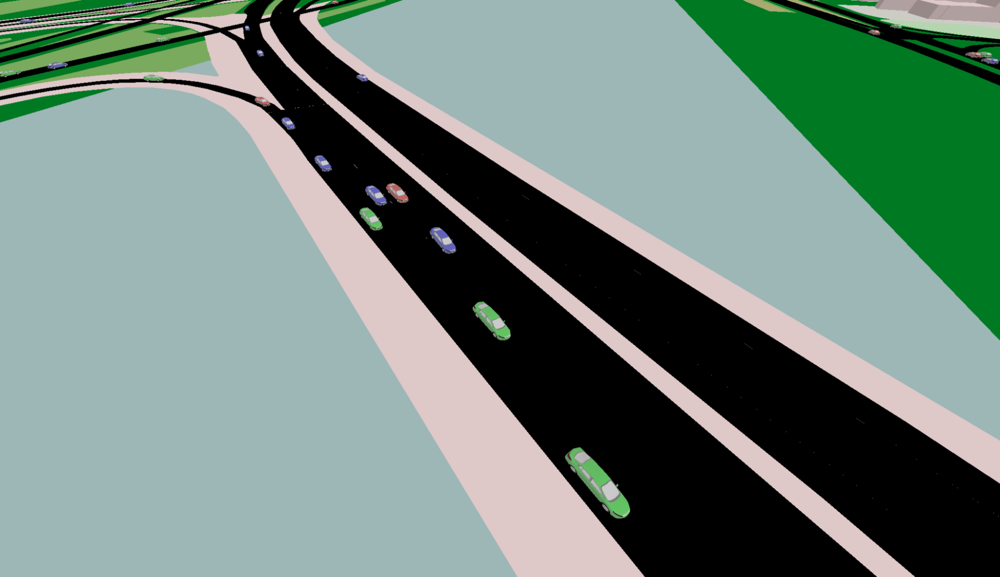

O projektu
Téma tvorby realistických dopravních simulací na základě historických dat je dnes důležité hlavně proto, že města a dopravní systémy jsou čím dál složitější a nestačí je zkoumat jen teoreticky. Pokud chceme dobře odhadnout, co se stane po změně semaforů, uzavírce, nové výstavbě nebo růstu dopravy, potřebujeme simulaci, která se co nejvíc podobá skutečnému provozu.
Právě historická data umožňují stavět modely, které nejsou „umělé“, ale vycházejí z reálného chování řidičů, intenzit dopravy i proměn během dne, týdne nebo různých sezón.



Datové zdroje
Pro takovou simulaci se dá využít víc typů dat, z nichž každé zachycuje jinou část reality:
- Záznamy z kamer a senzorů.
- Floating car data z navigací nebo vozidel.
- Klasické dopravní statistiky z měření intenzit.
- Informace o městské aktivitě (kde lidé pracují, bydlí, nakupují).
Technologie SUMO
Součástí této oblasti je práce se špičkovými dopravními simulátory, například SUMO (Simulation of Urban MObility), které umožňují tato data převést do detailních modelů a následně testovat různé scénáře bezpečně, levně a bez zásahu do skutečného provozu.